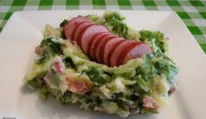

Frikandel Speciaal

Dingen die nodig zijn
- aardappel
- andijve
- worst
- Mayonaisse
Stappenplan
- doe de aardappel en andijve in een pan
- gebruik de stamper om het goed te mixen en stampen
- snij de rookworst in kleine stukken
- voeg de stukken toe aan de andijvie stampot
- eet smakkelijk!